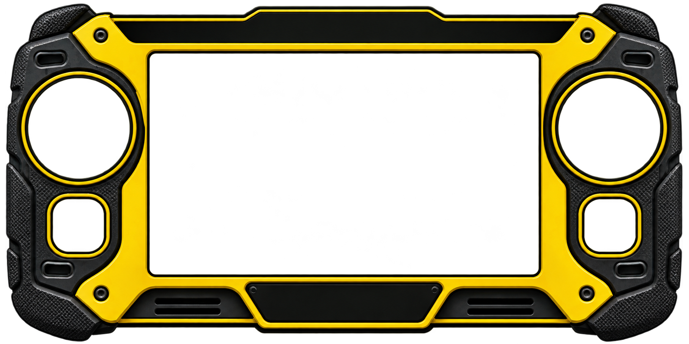
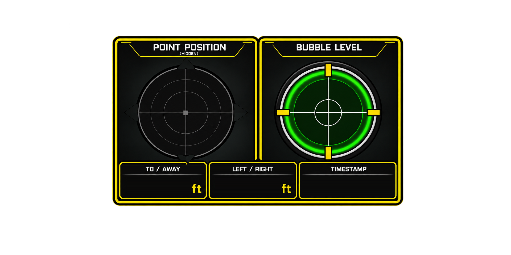
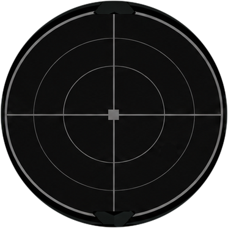
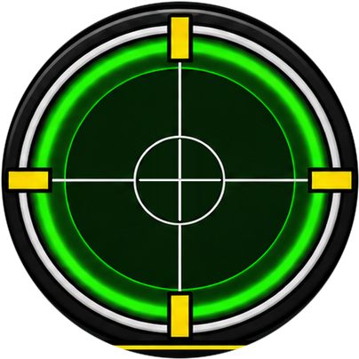
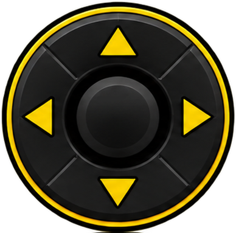
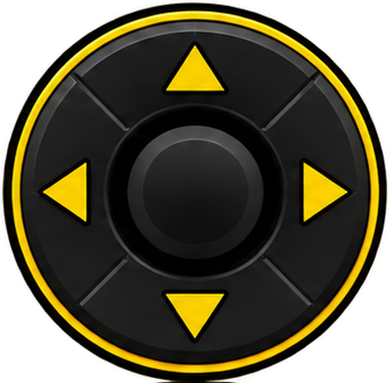
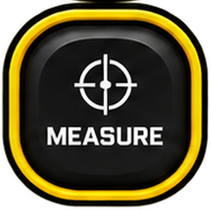
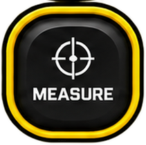

↻ ROTATE TO PLAY








PRESS SPACEBAR
OR CLICK TO START
W A S D or the LEFT D-PAD to walk • the RIGHT JOYSTICK, the arrow keys, or the cursor held on the vial levels the bubble (inverted) — let go and it runs back out
Only the boldly framed panel is live • BIPOD hands control back and forth; POLE keeps both live at once
MEASURE unlocks when both panels go live
Tap the TOTALSTATIONTECH plate or press ESC to quit to the menu